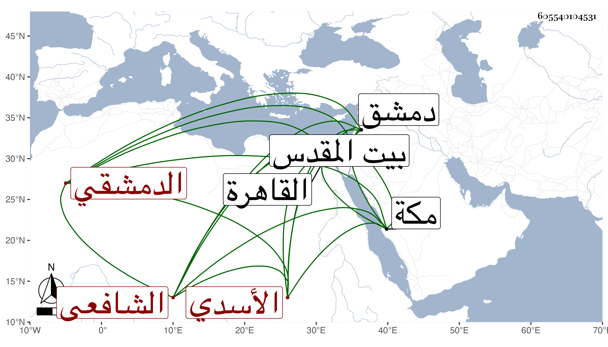

0902Sakhawi.DawLamic.ITO20230111-ara1.EIS1600.605540104531
Biography ID: 605540104531
299
عمر بن عبد الرحمن بن محمد بن محمد بن عبد الرحمن بن عمر بن إبراهيم الزين الأسدي الدمشقي الشافعي الماضي أبوه ويعرف بابن الجاموس . نشأ بدمشق فحفظ القرآن وغيره واشتغل وبرع وكتب الخط الحسن ، وتكسب بالشهادة وقدم القاهرة فسمع على بقايا من الرواة وتردد إلي يسيرا وكتب عني عدة مجالس من الأمالي وغيرها وتطارح مع الشهاب الحجازي وغيره وفرض للبدري مجموعه فأحسن ، وكان رائق الأوصاف فائق الإنصاف متوددا لطيفا متواضعا كثير المحاسن جاور بمكة وانتقى واختصر ونظم ونثر ، وسافر بأخرة إلى بيت المقدس . ومات على ما يحرر في إحدى الجمادين سنة سبع وثمانين وأظنه جاز الأربعين ونعم الرجل رحمه الله ، ومما كتبته من نظمه :
| إلهي إن أردت السوء يوما | بعبد من عبيدك قد طردته |
| قنا يا ربنا من كل سوء | فإنك من تقي الأسوا رحمته |
